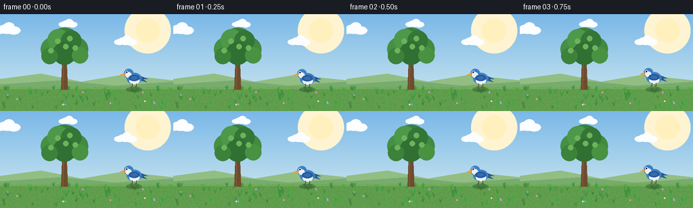
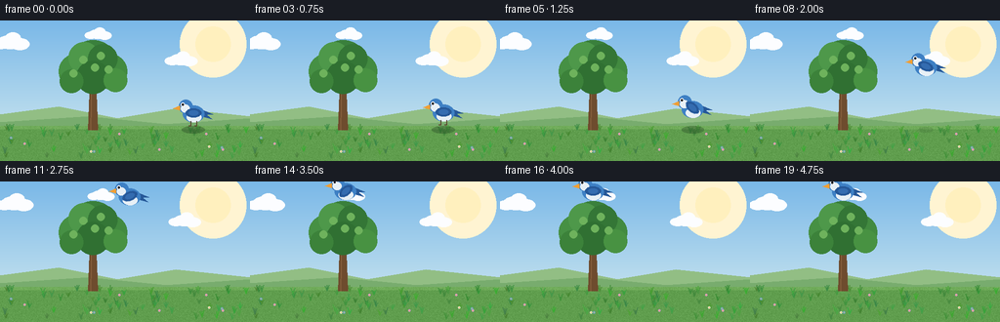

CODING AGENTS AS PIXEL WORLD MODELS
traex/Seed-2.1-Pro-0915 · dynamic_spatial_relationship_0049
点击播放 · 原生 RGB 像素
逐轮保存的候选
回放视频、检查图与代码变化。
每份候选均可单独播放。实际图片检查记录在下方工具轨迹中。
候选 01播放与检查图
点击播放 · 原生 RGB 像素


展开代码变化
--- 上一保存版本
+++ 本次保存版本
@@ -0,0 +1,289 @@
+"""Text-to-video: a bird on the right of a tree flies to above the tree.
+
+Procedurally draws 20 RGB frames (256x144, 4 fps) with PIL/numpy only.
+Rendered at 2x supersampling and downscaled for smooth edges.
+"""
+import math
+from pathlib import Path
+
+import numpy as np
+from PIL import Image, ImageDraw
+
+import artifact_io
+
+W, H, N, FPS = 256, 144, 20, 4.0
+SS = 2
+RW, RH = W * SS, H * SS
+
+CASE_DIR = Path(__file__).parent
+rng = np.random.default_rng(49)
+
+
+# ---------------------------------------------------------------- background
+def vertical_gradient(top, bottom):
+ grad = np.zeros((RH, RW, 3), dtype=np.float32)
+ for c in range(3):
+ grad[:, :, c] = np.linspace(top[c], bottom[c], RH)[:, None]
+ return grad
+
+
+def make_static_scenery():
+ """Pre-render everything that does not move (sky texture, hills, ground)."""
+ img = Image.fromarray(
+ vertical_gradient((122, 184, 232), (214, 236, 240)).astype(np.uint8)
+ )
+ d = ImageDraw.Draw(img)
+
+ # soft sun, upper right
+ sx, sy = int(218 * SS), int(24 * SS)
+ for r in (34, 26):
+ rr = r * SS
+ d.ellipse([sx - rr, sy - rr, sx + rr, sy + rr], fill=(255, 244, 210))
+ rr = 18 * SS
+ d.ellipse([sx - rr, sy - rr, sx + rr, sy + rr], fill=(255, 240, 190))
+
+ horizon = int(108 * SS)
+ # distant rolling hills
+ d.polygon([(0, horizon), (0, int(96 * SS)), (int(60 * SS), int(88 * SS)),
+ (int(120 * SS), int(100 * SS)), (int(180 * SS), int(90 * SS)),
+ (RW, int(98 * SS)), (RW, horizon)], fill=(146, 190, 132))
+ d.polygon([(0, horizon), (0, int(104 * SS)), (int(90 * SS), int(98 * SS)),
+ (int(170 * SS), int(106 * SS)), (RW, int(100 * SS)),
+ (RW, horizon)], fill=(120, 172, 110))
+
+ # ground
+ d.rectangle([0, horizon, RW, RH], fill=(96, 158, 78))
+ d.rectangle([0, horizon, RW, horizon + 3 * SS], fill=(112, 172, 90))
+
+ # ground speckle texture
+ arr = np.array(img)
+ noise = rng.normal(0, 7, (RH - horizon, RW, 1))
+ arr[horizon:, :, :] = np.clip(
+ arr[horizon:, :, :].astype(np.float32) + noise, 0, 255
+ )
+ img = Image.fromarray(arr.astype(np.uint8))
+ d = ImageDraw.Draw(img)
+
+ # grass tufts and tiny flowers
+ for _ in range(70):
+ gx = int(rng.integers(0, W)) * SS
+ gy = int(rng.integers(112, H - 2)) * SS
+ col = (int(rng.integers(55, 85)), int(rng.integers(130, 175)),
+ int(rng.integers(50, 75)))
+ for k in range(3):
+ dx = (k - 1) * 2 * SS
+ d.line([gx, gy, gx + dx, gy - int(rng.integers(4, 8)) * SS],
+ fill=col, width=SS)
+ for _ in range(10):
+ fx = int(rng.integers(6, W - 6)) * SS
+ fy = int(rng.integers(116, H - 6)) * SS
+ petal = tuple(int(v) for v in rng.choice(
+ [(245, 220, 90), (240, 150, 170), (235, 235, 240)], axis=1))
+ d.ellipse([fx - SS, fy - SS, fx + SS, fy + SS], fill=petal)
+ d.ellipse([fx - 1, fy - 1, fx + 1, fy + 1], fill=(230, 180, 60))
+ return img
+
+
+SCENERY = make_static_scenery()
+CLOUDS = [
+ (30.0, 22.0, 1.0),
+ (120.0, 14.0, 0.7),
+ (205.0, 40.0, 0.85),
+]
+
+
+def draw_clouds(d, t):
+ for base_x, y, scale in CLOUDS:
+ cx = (base_x + t * 1.6 * scale) % (W + 40) - 20
+ cy = y
+ s = scale * SS
+ for dx, dy, rx, ry in [(0, 0, 13, 7), (10, 2, 10, 6),
+ (-10, 2, 9, 5), (3, -4, 8, 6)]:
+ x0 = (cx + dx * scale) * SS
+ y0 = (cy + dy * scale) * SS
+ d.ellipse([x0 - rx * s, y0 - ry * s, x0 + rx * s, y0 + ry * s],
+ fill=(252, 253, 255))
+
+
+# --------------------------------------------------------------------- tree
+TREE_CX = 95
+GROUND_Y = 112
+
+
+def draw_tree(base):
+ img = base.copy()
+ d = ImageDraw.Draw(img)
+ cx = TREE_CX * SS
+
+ # trunk with gentle taper
+ trunk_top = int(62 * SS)
+ trunk_bottom = GROUND_Y * SS
+ d.polygon([(cx - 5 * SS, trunk_bottom), (cx + 5 * SS, trunk_bottom),
+ (cx + 3 * SS, trunk_top), (cx - 3 * SS, trunk_top)],
+ fill=(110, 76, 46))
+ # bark highlight
+ d.line([cx - 2 * SS, trunk_bottom, cx - 1 * SS, trunk_top],
+ fill=(133, 95, 60), width=SS)
+ # branches
+ d.line([cx, int(70 * SS), cx - 16 * SS, int(56 * SS)],
+ fill=(110, 76, 46), width=3 * SS)
+ d.line([cx, int(66 * SS), cx + 15 * SS, int(52 * SS)],
+ fill=(110, 76, 46), width=3 * SS)
+
+ # canopy: overlapping leaf clusters
+ canopy = [
+ (0, 46, 26, (58, 128, 60)),
+ (-17, 52, 18, (70, 144, 68)),
+ (17, 52, 18, (66, 138, 64)),
+ (-9, 38, 16, (78, 152, 74)),
+ (10, 39, 15, (52, 118, 54)),
+ (0, 58, 17, (48, 112, 50)),
+ (-22, 62, 12, (60, 130, 58)),
+ (23, 61, 12, (72, 146, 66)),
+ ]
+ for dx, cy, r, col in canopy:
+ x0, y0 = cx + dx * SS, int(cy * SS)
+ rr = r * SS
+ d.ellipse([x0 - rr, y0 - rr, x0 + rr, y0 + rr], fill=col)
+ # leaf highlights
+ for dx, dy in [(-10, 40), (8, 36), (-20, 54), (16, 50), (2, 48)]:
+ x0, y0 = cx + dx * SS, int(dy * SS)
+ rr = 4 * SS
+ d.ellipse([x0 - rr, y0 - rr, x0 + rr, y0 + rr], fill=(110, 178, 92))
+ return img
+
+
+TREE_IMG = draw_tree(SCENERY)
+
+
+# --------------------------------------------------------------------- bird
+BLUE = (62, 128, 196)
+BLUE_DARK = (38, 88, 152)
+BLUE_WING = (52, 108, 176)
+BELLY = (232, 240, 246)
+BEAK = (240, 158, 52)
+LEG = (90, 70, 45)
+
+
+def draw_bird(base, x, y, flap, flying, facing=1):
+ """x, y in 256x144 coords; flap in [-1, 1] wing position."""
+ img = base.copy()
+ d = ImageDraw.Draw(img)
+ s = SS
+ cx, cy = x * s, y * s
+
+ # ground shadow fades as the bird climbs
+ height = max(0.0, GROUND_Y - y)
+ shadow_a = max(0.0, 1.0 - height / 95.0)
+ if shadow_a > 0.02:
+ sw = max(4, 13 - height * 0.08) * s
+ sh = max(2, 4 - height * 0.02) * s
+ ov = Image.new("RGBA", img.size, (0, 0, 0, 0))
+ od = ImageDraw.Draw(ov)
+ od.ellipse([cx - sw, GROUND_Y * s - sh, cx + sw, GROUND_Y * s + sh],
+ fill=(30, 60, 30, int(110 * shadow_a)))
+ img = Image.alpha_composite(img.convert("RGBA"), ov).convert("RGB")
+ d = ImageDraw.Draw(img)
+
+ def pt(px, py):
+ return cx + facing * px * s, cy + py * s
+
+ # tail feathers (behind body)
+ d.polygon([pt(8, -4), pt(8, 2), pt(20, 1)], fill=BLUE_DARK)
+ d.polygon([pt(8, -3), pt(8, 3), pt(19, 6)], fill=BLUE_DARK)
+
+ # body
+ d.ellipse([cx - 11 * s, cy - 8 * s, cx + 11 * s, cy + 9 * s], fill=BLUE)
+ # belly
+ d.ellipse([cx - 7 * s, cy - 1 * s, cx + 8 * s, cy + 9 * s], fill=BELLY)
+
+ # head (front side = negative x when facing left)
+ hx, hy = pt(-8, -7)
+ d.ellipse([hx - 7 * s, hy - 7 * s, hx + 7 * s, hy + 7 * s], fill=BLUE)
+ # cheek
+ d.ellipse([hx - 5 * s, hy - 2 * s, hx + 4 * s, hy + 6 * s], fill=BELLY)
+ # beak
+ bx, by = hx + facing * (-6 * s), hy + 1 * s
+ d.polygon([(bx, by - 2 * s), (bx + facing * (-7 * s), by + s),
+ (bx, by + 3 * s)], fill=BEAK)
+ # eye
+ ex, ey = hx + facing * (-3 * s), hy - 2 * s
+ d.ellipse([ex - 2 * s, ey - 2 * s, ex + 2 * s, ey + 2 * s],
+ fill=(255, 255, 255))
+ d.ellipse([ex - s, ey - s, ex + s, ey + s], fill=(25, 30, 40))
+
+ # wing on a separate layer so it can rotate with the flap
+ wing = Image.new("RGBA", img.size, (0, 0, 0, 0))
+ wd = ImageDraw.Draw(wing)
+ wcx, wcy = pt(1, -1)
+ wd.ellipse([wcx - 9 * s, wcy - 4 * s, wcx + 7 * s, wcy + 5 * s],
+ fill=BLUE_DARK)
+ wd.ellipse([wcx - 6 * s, wcy - 2 * s, wcx + 4 * s, wcy + 3 * s],
+ fill=BLUE_WING)
+ if flying:
+ angle = -facing * flap * 42 # up/down stroke
+ wing = wing.rotate(angle, center=(wcx, wcy),
+ resample=Image.BICUBIC)
+ img = Image.alpha_composite(img.convert("RGBA"), wing).convert("RGB")
+
+ # legs, visible while perched or close to the ground
+ if not flying or height < 18:
+ d = ImageDraw.Draw(img)
+ for lx in (-3, 3):
+ px, py = pt(lx, 8)
+ d.line([(px, py), (px, py + 5 * s)], fill=LEG, width=max(1, s))
+ d.line([(px, py + 5 * s), (px - 2 * s, py + 5 * s)],
+ fill=LEG, width=max(1, s))
+ return img
+
+
+# ---------------------------------------------------------------- motion path
+PERCH = (198.0, 95.0) # clearly to the right of the tree
+ABOVE = (TREE_CX, 10.0) # just above the canopy top (~y=20)
+C1 = (192.0, 30.0)
+C2 = (132.0, 8.0)
+
+
+def cubic(p0, p1, p2, p3, t):
+ u = 1 - t
+ return (u ** 3 * np.array(p0) + 3 * u ** 2 * t * np.array(p1)
+ + 3 * u * t ** 2 * np.array(p2) + t ** 3 * np.array(p3))
+
+
+def bird_state(i):
+ """Return (x, y, flap, flying)."""
+ if i <= 3: # perched on the right, tiny idle bob
+ bob = math.sin(i * 1.4) * 0.6
+ return PERCH[0], PERCH[1] + bob, 0.0, False
+ if i >= 16: # hovering above the tree
+ t = (i - 16) / 3.0
+ bob = math.sin(t * math.pi * 2)
+ flap = math.sin(t * math.pi * 2) * 0.7
+ return ABOVE[0], ABOVE[1] + bob, flap, True
+ t = (i - 4) / 11.0
+ te = t * t * (3 - 2 * t) # smoothstep
+ x, y = cubic(PERCH, C1, C2, ABOVE, te)
+ flap = math.sin(t * math.pi * 6) # three wingbeats across the flight
+ return x, y, flap, True
+
+
+def render_frame(i):
+ t = i / FPS
+ frame = SCENERY.copy()
+ d = ImageDraw.Draw(frame)
+ draw_clouds(d, t)
+ frame = draw_tree(frame)
+ x, y, flap, flying = bird_state(i)
+ frame = draw_bird(frame, x, y, flap, flying)
+ return np.array(frame.resize((W, H), Image.Resampling.LANCZOS),
+ dtype=np.uint8)
+
+
+def main():
+ frames = [render_frame(i) for i in range(N)]
+ artifact_io.save(frames, CASE_DIR)
+ print(f"Saved {N} frames ({W}x{H} @ {FPS} fps) to {CASE_DIR}")
+
+
+if __name__ == "__main__":
+ main()
可观测工具轨迹
实际执行的命令与返回图片。
命令 1exit 0
/bin/bash -lc 'cat prompt.txt; echo "---"; cat GENERATION_RULES.md; echo "---"; cat task_spec.json; echo "---"; ls -la'
命令 2exit 0
/bin/bash -lc 'cat artifact_io.py'
命令 3exit 0
/bin/bash -lc 'cd "$(pwd)" && python generate.py && ls -la'
视觉工具实际返回图片 1

保存候选 1 份；完成命令 3 次；可验证图片返回 1 张。原始 API 响应与完整日志保留在本地。